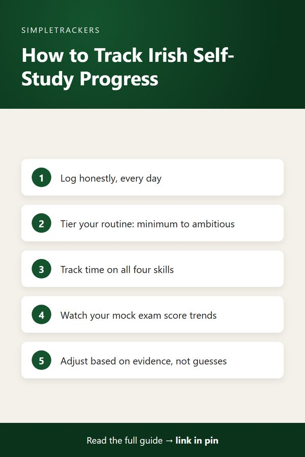

The Complete Guide to Irish Gaelic Self-Study Progress Tracking

Key takeaways
- Progress feels invisible: without a record, the small breakthroughs of Irish study blur together.
- Tracking is a mirror: it shows what you're accomplishing, which approaches work and where your real progress lies.
- Consistency over perfection: honest daily logging and a tiered routine beat ambitious plans you can't keep.
- Balance all four skills: logging listening, speaking, reading and writing keeps you from drifting into comprehension only.
- One system, many learners: heritage learners, hobbyists and TEG candidates each get columns for what matters to them.
Your Complete Resource for Tracking Irish Self-Study
Learning Irish as a self-taught student is a deeply personal journey. Whether you're reconnecting with your heritage, pursuing cultural curiosity, preparing for formal certification, or simply loving the language itself, one truth remains constant: progress feels invisible without a system to capture it.
Language learning happens gradually, at the edge of consciousness. You notice the moment you understand an Irish phrase without mentally translating it to English, or when a grammar pattern finally clicks into place. But without a way to record what you've learned, these moments blur together. Weeks pass and you wonder: am I actually making progress, or just pretending to?
This is the problem that an effective tracking system solves. More than a productivity tool or a glorified to-do list, a tracker for your Irish study becomes your mirror. It shows you:
- Exactly what you're accomplishing.
- Which approaches work best for you.
- Where your real progress lies.
Whether you're a heritage learner reconnecting with your family's language, a hobbyist learning Irish out of love for the culture, or an exam candidate preparing for the Teastas Eorpach na Gaeilge (TEG), the same core principle holds: visibility creates accountability, momentum, and genuine learning outcomes.
This guide brings together everything you need to know about tracking your Irish language self-study effectively: the why, the how, and the practical details of building a logging practice that actually works.
The foundation is simple
Consistent, honest daily logging creates data you can use to understand your learning patterns better and adjust your approach before problems mount.
| If you are... | Start with |
|---|---|
| New to tracking | Why Tracking Your Irish Study Matters |
| Short on time | Daily Study Routine for Busy Learners |
| A heritage learner | Reconnecting with Irish as a Heritage Learner |
| Preparing for TEG | TEG Exam Prep: Tracking Your Readiness |
| Coming back after time away | Restarting Irish Study After a Break |
Understanding Why Tracking Changes Everything
Before diving into systems and spreadsheets, it's worth understanding the real problem that tracking solves. Why Tracking Your Irish Study Matters explores the challenge of measuring invisible progress that every language learner faces.
When you study for months, it's easy to feel like you're working without accumulating anything concrete. The post explains:
- Why that happens.
- What the costs are when you can't measure progress.
- What transforms when you start keeping a simple record.
The clarity it creates, for yourself and for anyone you study with, is genuinely powerful.
Building a Sustainable Routine That Fits Your Life
Understanding why you should track is one thing; actually building a routine you can maintain is another. Daily Study Routine for Busy Learners walks you through realistic approaches to building a study practice that survives your real life.
The secret isn't to be perfect or all-consuming; it's to be consistent. This post covers:
- Realistic tiers of study: minimum, standard, ambitious.
- Habit anchors: tying study to existing daily habits so it requires no extra willpower.
- Seasonal adjustment: scaling up or down when life gets busier or calmer.
You'll learn that sustainable learning doesn't require hours of study daily; it requires showing up regularly, even if some days that's just fifteen minutes.
Developing Balanced Skills Across All Four
Many Irish learners discover they've specialized into a dead end: able to understand Irish well but unable to speak it, or comfortable with reading but helpless in conversation. Balancing the Four Skills: Listening, Speaking, Reading, and Writing identifies why this happens and how to prevent it.
The post explains how the four skills (listening, reading, speaking and writing) are interconnected and why all four matter for genuine proficiency. You'll learn:
- The particular challenge Irish presents: mutations that learners who only listen might recognize passively but not produce correctly.
- A realistic time allocation across all four skills.
- Concrete strategies for starting to speak and write if you've drifted toward only listening and reading.
The tracker makes this balance visible; this post explains why it matters.
Learning to Use Your Tracker Effectively
Once you have a tracking system in place, it helps to understand exactly what each column is for and how to fill it in correctly. How to Use the Tracker: A Column-by-Column Guide provides a detailed walkthrough of the Irish Gaelic Self-Study Progress Tracker. You'll:
- See real examples of what consistent logging looks like.
- Understand the purpose of each core column (date, study hours, vocabulary learned, grammar covered, listening/speaking/reading/writing minutes).
- Learn about optional columns for heritage learners and exam candidates.
The post also explains how to use the data you collect: how to read your progress over months, identify patterns, and adjust your approach based on evidence rather than guesswork.

For Heritage Learners: Connecting Language to Family
Heritage learners bring a different motivation to Irish study than other learners do. Reconnecting with Irish as a Heritage Learner addresses the specific challenges and opportunities of reconnecting with your family's language. The post explains:
- Why heritage learning often happens in episodic bursts rather than constant daily effort (which is perfectly fine).
- How to connect your study to family stories and cultural practices that give vocabulary emotional resonance.
- Why you belong in this learning community regardless of how late you're starting or how basic your level is.
Heritage columns in the tracker
The tracker includes optional fields designed specifically for heritage learners: cultural motivation notes, family stories practiced, and time spent conversing with native speakers. These columns let you track the dimensions of learning that matter most to you.
For Exam Candidates: Preparing for TEG with Evidence
If you're preparing for the Teastas Eorpach na Gaeilge (TEG) exam, you face a different challenge than casual learners. TEG Exam Prep: Tracking Your Readiness shows you how a tracker transforms exam preparation from an anxiety-filled guessing game into evidence-based strategy.
The post walks through how the tracker's exam-specific fields work together to show you exactly where you stand and what you need to do next:
- Your target level and section
- Mock exam scores
- The countdown to exam day
- Your target completion percentage
You'll learn how to identify meaningful patterns in your mock exam scores (trending up is progress; flat trends demand strategy changes), how to use the days-to-exam countdown to shift your study intensity appropriately, and why this data-driven approach is more valuable than hope. The tracker won't write your exam for you, but it will ensure you approach exam day with clear evidence of your readiness.
Getting Answers to Questions You Didn't Know You Had
As you start tracking, practical questions come up:
- How often do you really need to log study sessions?
- What if you miss several days?
- Can you track effectively if your schedule is unpredictable?
Irish Study FAQ: Your Most Common Questions Answered addresses the most frequently asked questions from actual Irish learners. You'll find reassuring answers that make tracking feel achievable rather than another source of guilt or pressure. Many learners discover that their concerns about whether they're doing it right dissolve once they understand what the tracker actually requires and how forgiving it can be.
Ready to Start or Improve Your Practice
Tracking your Irish study transforms the way you manage your learning and sustain your motivation.
| Instead of... | You have... |
|---|---|
| Relying on memory and feelings about progress | Actual data |
| Wondering whether you're making progress | Evidence |
| Letting study drift toward comfortable skills | Visibility into balance |
Whether you're learning Irish to reconnect with your heritage, pursuing it because you love the culture and language, or preparing for formal certification, this guide provides the framework and knowledge you need to build a practice that works for you.
Materials That Support Your Study Practice
Tracking shows you where your study time is going, but sometimes progress speeds up with the right materials. Irish Study Tools Essentials: Materials That Support Real Progress rounds up practical resources (dictionaries, flashcards, reading material for every level, tools for staying organized) that make consistent study easier to sustain and easier to track. Pair it with your tracking practice to see what actually changes.
Setting Realistic Expectations About Time
Nearly every learner asks the same question early on. How Long Does It Take to Learn Irish? gives an honest answer: it depends entirely on what "learn" means to you. It breaks down:
- Rough timelines by goal.
- What makes Irish slower than some languages.
- What genuinely speeds progress up.
- Why cumulative hours matter far more than months on a calendar.
Getting Back on Track After a Break
Breaks happen, and restarting doesn't mean starting over. Restarting Irish Study After a Break walks through how to:
- Assess honestly. Work out what you've retained.
- Rebuild the habit first. Restore your routine before your skill level.
- Triage with old data. Use your old tracking data to decide what needs review first.
How Much Vocabulary Is Actually Enough
"How many words do I need?" is one of the most common questions self-taught learners ask. How Many Words Do You Need for a Basic Conversation in Irish? gives rough targets by goal (from survival phrases to comfortable chat), explains why the high-frequency core matters more than raw count, and shows how to track active vocabulary growth as you go.
Closing the Gap Between Reading and Listening
Many learners read Irish comfortably but struggle the moment a native speaker talks at normal speed. Why Can't You Understand Spoken Irish Yet? explains why that gap is normal, how to pinpoint whether it's a speed, dialect, or vocabulary problem, and how to climb a listening ladder toward native-pace comprehension while tracking your progress session by session.
To get started with a ready-to-use tracking system that handles the structure and format for you, download the Irish Gaelic Self-Study Progress Tracker today. The spreadsheet comes pre-formatted with columns designed for easy daily logging, includes example entries showing exactly how consistent tracking looks in practice, and is flexible enough to serve heritage learners, hobbyists, and exam candidates equally. Combined with the resources in this guide, you'll have everything you need to move from wondering about your progress to knowing it with certainty. Go neart in aghaidh an t-olc.